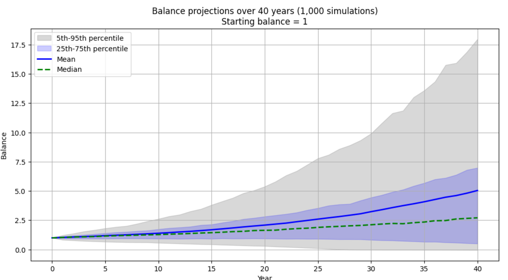

Exploring Safe Withdrawal Rates with Monte Carlo Simulations
October 2025
You've probably heard about the 4% rule for retirement withdrawals. The idea that you can safely withdraw 4% of your portfolio each year. I wanted to explore this concept a bit more and see how different assumptions might affect the outcome, so I created a simple Monte Carlo simulation notebook in Python.

The notebook lets you simulate portfolio growth and withdrawals over time, visualize possible outcomes, and see the probability of running out of money under different scenarios. You can tweak the assumptions like expected return, volatility, inflation, withdrawal rate, and time horizon.
Keep in mind, this is just a simple tool for experimentation. The ideal withdrawal strategy is likely dynamic, adjusting based on market performance, and this notebook is meant for learning and exploration rather than precise financial advice.
Try it out here: Monte Carlo Withdrawal Simulation
Like this article? Get notified of new ones: